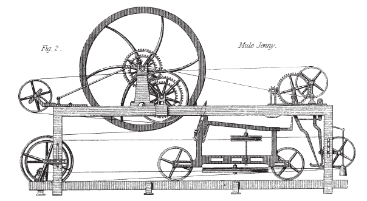

Kısa cevap: Sanayi Çağı, insan emeği ve hayvan gücüne dayalı üretimin makine, fosil yakıt ve fabrika düzeniyle dönüşmeye başladığı uzun dönemdir. İlk Sanayi Devrimi yaklaşık 1760'larda Britanya'da belirginleşti; başka ülke ve toplumlara farklı tarihlerde yayıldı. Bu değişim yalnızca yeni makineler değil, işin, kentin, ticaretin ve gündelik hayatın yeniden kurulması demekti.
Sanayi Çağı hangi yılları kapsar?
İlk Sanayi Devrimi için sık kullanılan yaklaşık aralık 1760–1840'tır. Bu tarihler özellikle Britanya'daki dönüşümü anlatır; dünya çapında aynı anda yaşanan bir başlangıç ve bitiş değildir. Sanayileşme 19. yüzyılda Avrupa'nın başka bölgelerine ve Kuzey Amerika'ya yayıldı; daha sonra farklı ülkeler kendi koşullarında sanayileşti. “Sanayi Çağı” ilk devrimden daha geniş bir dönemi ifade eder ve bugün de üretim biçimlerini etkilemeyi sürdürür.[1]
Sanayi Devrimi neden önce Britanya'da başladı?
Tek bir açıklama yok. Britanya'da kömür yataklarına erişim, ulaşım ve ticaret ağları, sermaye birikimi, ücret düzeyleri, teknik beceriler ve devlet politikaları birlikte etkili oldu. Ekonomi tarihçisi Robert C. Allen, Britanya'daki görece yüksek ücretler ile ucuz kömürün, emek tasarrufu sağlayan makineleri işletmeyi daha kârlı kıldığı tezini öne çıkarır. Bu, önemli bir akademik açıklamadır; fakat sanayileşmenin bütün nedenlerini tek başına açıklayan tartışmasız bir formül değildir.[1]
Kömür, üretimde kullanılabilir enerji miktarını artırdı; ancak bu enerji “bedelsiz” değildi. Maden işçiliği tehlikeliydi, kömürün yakılması hava kirliliği ve sera gazı salımlarını büyüttü. Tarihçi E. A. Wrigley, fosil yakıtlara geçişi Britanya'daki sanayileşmenin önemli koşullarından biri olarak inceler; bu dönüşümün çevresel maliyetlerini de göz ardı etmemek gerekir.[2]
Atölyeden fabrikaya: üretim nasıl dönüştü?
Sanayileşme önce pamuklu tekstil gibi alanlarda belirginleşti. İplik eğirme ve dokuma makineleri, aynı sürede daha fazla ürün çıkarılmasını sağladı; üretim giderek ev ve küçük atölyelerden enerji kaynaklarına yakın büyük işyerlerine taşındı. Spinning mule, birden fazla ipliği aynı anda eğirerek tekstil üretiminin ölçeğini büyüten makinelerden biriydi. Görseldeki 1835 tarihli gravür, dönemin bu makineyi nasıl çizdiğine dair birincil kaynak niteliğindedir.
Buhar makinesi James Watt ile başlamadı. Thomas Newcomen'ın 1712'de kullanılan atmosferik makinesi madenlerden su çekmeye yarıyordu; Watt'ın 18. yüzyılın ikinci yarısındaki geliştirmeleri yakıt verimliliğini artırdı ve makinenin farklı üretim alanlarında kullanılmasını kolaylaştırdı. Buhar gücü, tekstil makineleri, demir üretimi, kömür ve ulaşım birbirini besleyen değişimlerin parçalarıydı. Detaylar için temel teknoloji icatları yazımıza bakabilirsiniz.
1825'te açılan Stockton–Darlington demiryolu hattı ve sonraki demiryolu ağları, ham madde ve bitmiş ürünlerin taşınma hızını değiştirdi. 19. yüzyılın sonlarına doğru elektrik, çelik üretimi, kimya sanayisi ve petrol temelli motorlar yeni bir sanayileşme dalgası yarattı. Bunlar da bir anda her yerde kullanılmadı; altyapı, yatırım ve yerel ihtiyaçlara bağlı olarak yayıldı.
Fabrika, emek ve kent hayatı
Fabrika üretimi, işi makinenin temposuna ve belirlenmiş çalışma saatlerine bağladı. İşçiler uzun mesailer, düşük ücretler, iş kazaları ve sağlıksız çalışma koşullarıyla karşı karşıya kalabiliyordu. Kadınlar ve çocuklar da özellikle tekstil ve maden işlerinde çalıştırıldı; ücret ve hukuki koruma eşit değildi. Bu koşullar her işyerinde aynı değildi, fakat işçi örgütlenmeleri, grevler ve fabrika düzenlemeleri bu eşitsizliklere karşı gelişti. Emma Griffin'in işçilerin tanıklıklarını inceleyen çalışması, sanayileşmeyi yalnızca makinelerin değil, onu yaşayan insanların gözünden okumaya yardımcı olur.[3]
Kırsaldan kentlere göç hızlandı; yeni iş imkânlarıyla birlikte kalabalık konutlar, altyapı yetersizliği ve halk sağlığı sorunları büyüdü. Zaman içinde kanalizasyon, temiz su, ulaşım ve kamu sağlığı düzenlemeleri şehir yaşamını değiştirdi. Bu sonuçlar yalnızca teknolojinin otomatik ürünü değildi: yerel yönetimler, işverenler, işçiler ve siyasi mücadeleler hangi koşulların iyileştirileceğini belirledi.
Sanayileşmenin küresel bedeli ve bağlantıları
Britanya fabrikalarının pamuk ihtiyacı, Amerika kıtasındaki köle emeğine dayalı plantasyonlarla ve küresel ticaret ağlarıyla bağlantılıydı. Hammadde üretimi, taşınması ve fabrikada işlenmesi farklı kıtalardaki insanların hayatını aynı zincire bağladı; ancak kazanç ve zorunlu emek eşit paylaşılmadı. Sanayi tarihini yalnızca Avrupa'daki makineleşme olarak anlatmak, bu emek ve kaynak akışını görünmez kılar.[4]
Sanayileşme daha sonra Avrupa ve Kuzey Amerika dışındaki toplumlara da yayıldı; kimi yerde yerel sanayi girişimleriyle, kimi yerde sömürgeci yönetimlerin kaynak ve ticaret düzeniyle şekillendi. Bu yüzden “geç sanayileşen” ülkeleri yalnızca geride kalmış gibi görmek yerine, küresel güç ilişkilerini ve farklı başlangıç koşullarını da hesaba katmak gerekir.
Sanayi Çağı bitti mi?
Hayır; “Sanayi Çağı” hâlâ içinde yaşadığımız üretim düzeninin önemli bir yönü. 20. yüzyılda elektrik şebekeleri, seri üretim, petrol ve otomobil; daha sonra elektronik, bilgisayarlar ve robotik üretim biçimlerini değiştirdi. Bazı tarihçiler bu dönüşümlere “ikinci” ve “üçüncü sanayi devrimleri” der; dalgaların başlangıç ve bitişleri kullanılan tanıma göre değişir.
Sanayileşme daha çok mal üretmeyi mümkün kıldı; aynı zamanda emek, enerji ve kaynak kullanımını yeni ölçeklere taşıdı. Bugün otomasyon ve yapay zekâ üzerine sorular da bu tarihin devamıdır: Üretkenlik artınca fayda kime ulaşıyor, işi kim yapıyor ve çevresel bedeli kim taşıyor? Otomobil üretiminin sonraki aşamasını arabanın gelişim hikâyesinde, teknoloji tarihinin uzun bağlantılarını ise keşifler haritasında izleyebilirsiniz.
Erken Modern Dönem'den Sanayi Çağı'na
Sanayi Devrimi, daha önceki ticaret, bilim, enerji ve emek dönüşümlerinden kopuk biçimde ortaya çıkmadı. Bu geçişin öncesini Erken Modern Dönem yazımızda anlattık. Bir sonraki tarihsel adım ise sanayileşmenin farklı toplumlarda nasıl yayıldığını ve 20. yüzyılda üretim düzenini nasıl değiştirdiğini izlemek.
Sanayi Çağı'ndan Bilgi ve Dijital Çağ'a
Sanayileşme makinelerle fiziksel üretimi ölçeklendirirken bilgisayarlar ve ağlar bilginin işlenmesini ve paylaşılmasını büyüttü. Bu dönüşümü Bilgi ve Dijital Çağ rehberinde inceleyebilirsiniz.
Kaynaklar ve görsel bilgisi
- Robert C. Allen, The British Industrial Revolution in Global Perspective, Cambridge University Press, 2009. Yayınevi DOI kaydı.
- E. A. Wrigley, Energy and the English Industrial Revolution, Cambridge University Press, 2010. Yayınevi DOI kaydı.
- Emma Griffin, Liberty's Dawn: A People's History of the Industrial Revolution, Yale University Press, 2013. Yayınevi DOI kaydı.
- Edward E. Baptist, The Half Has Never Been Told: Slavery and the Making of American Capitalism, Basic Books, 2014.
- Edward Baines'in History of the Cotton Manufacture in Great Britain kitabında 1835'te yayımlanan spinning mule gravürü. Wikimedia Commons kaydında kamu malı (Public domain) olarak işaretlenmiştir; kaynak ve hak durumu: eser, kaynak ve lisans kaydı.
1760–1840 aralığı, Britanya'daki ilk sanayi dönüşümünü anlatan yaklaşık bir dönemlendirmedir; sanayileşme başka toplumlarda farklı zaman ve koşullarda gelişti. Görsel 1835 tarihli gerçek bir gravürdür; fotoğraf veya çağdaş makine çizimi değildir.